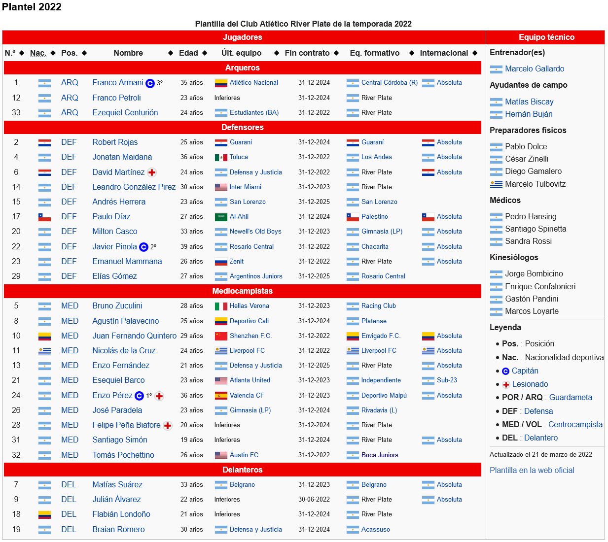

- Grupo A
- Grupo B
- Grupo C
- Grupo D
El Club Atlético River Plate es una entidad polideportiva con sede en Buenos Aires, Argentina. Fue fundado el 25 de mayo de 1901 en el barrio de La Boca, tras la fusión de los clubes Santa Rosa y La Rosales, y su nombre proviene de la antigua denominación que se le daba en el inglés británico al Río de la Plata. Su principal actividad es el fútbol masculino profesional, el cual participa en la Liga Profesional de Fútbol. Disputa sus partidos en el estadio Antonio Vespucio Liberti, conocido como «El Monumental», el de mayor capacidad del país y el sexto de América, con una capacidad para 72 054 espectadores. Es uno de los clubes más exitosos del mundo con un total de 69 títulos en su palmarés. Es el club más ganador de la Primera División de Argentina, con 37 campeonatos conseguidos —incluyendo el campeonato argentino de 1920 ganado en la era amateur del fútbol argentino—. También es el segundo club más ganador de copas nacionales con 14 títulos. Es el segundo club más ganador de la Copa Argentina con 3 títulos y el más ganador de la Supercopa Argentina con 2 trofeos. Ostenta el récord de ser el club más ganador del fútbol argentino desde su profesionalización en 1931 sumando 66 títulos oficiales. En el ámbito internacional, River fue designado por la FIFA —ocupando el mismo lugar que AC Milan y Flamengo— como el noveno mejor club del siglo XX. calificando como el mejor equipo argentino y tercero a nivel continental. Por su parte, la IFFHS en un ranking elaborado en el año 2009 lo ubicó en la cuarta posición a nivel continental. En el nuevo ranking organizado por la misma institución donde se establece el mejor club del siglo XXI por décadas, se ubica primero en la segunda década, que establece puntajes desde 2011 a 2020. A lo largo de su historia consiguió importantes récords a nivel nacional, donde destaca ser el líder de la tabla histórica de Primera División, además de ser el que más partidos ganó, el que menos perdió, el que más goles marcó y el que menos recibió, y es también el que más temporadas disputó en la máxima categoría del fútbol argentino. Además, es el equipo que más veces ha conseguido un tricampeonato de liga, en cuatro oportunidades y el primer y único club en ser bicampeón de la Copa Argentina.
